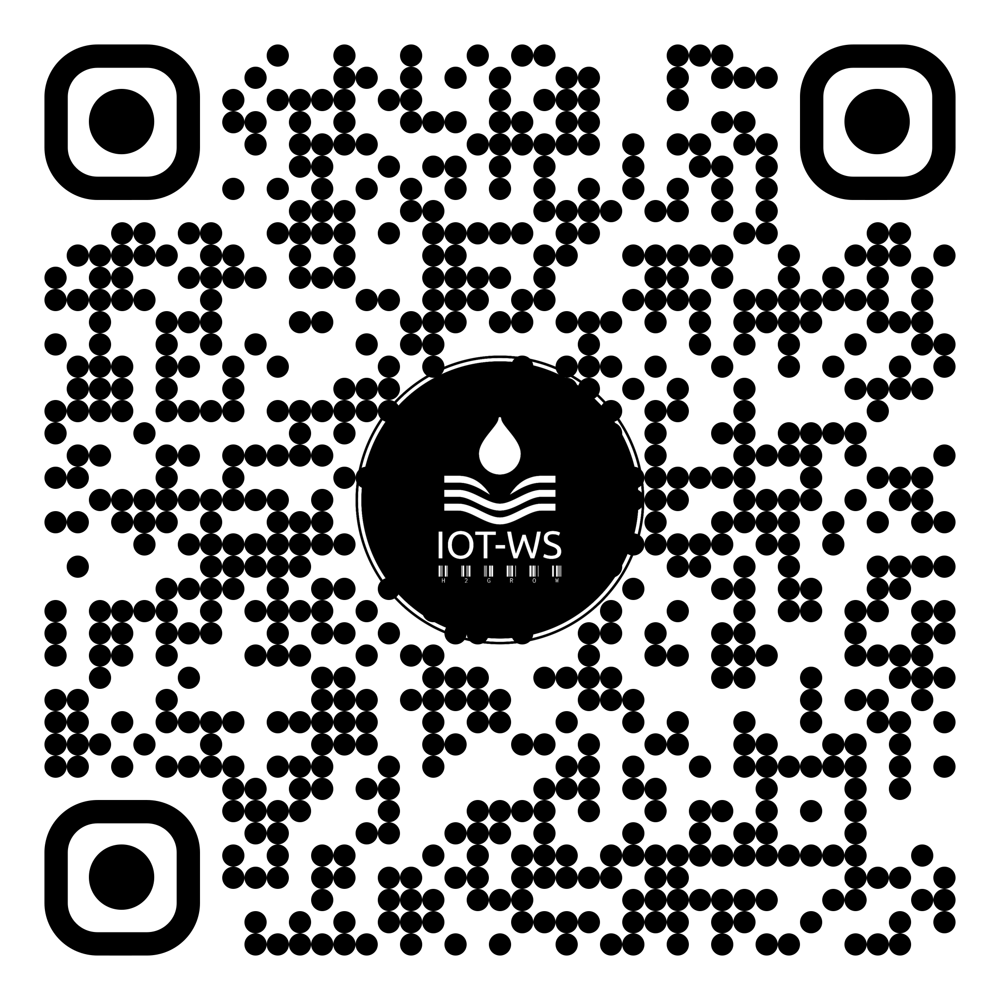

This is a dummy content for the About section.
Start by setting up your IoT Watering System. Connect the devices as shown in the image below:
Once setup is complete, open the application. The interface should look like this:
Click the button below to download our IoT Watering System application.
Download Now